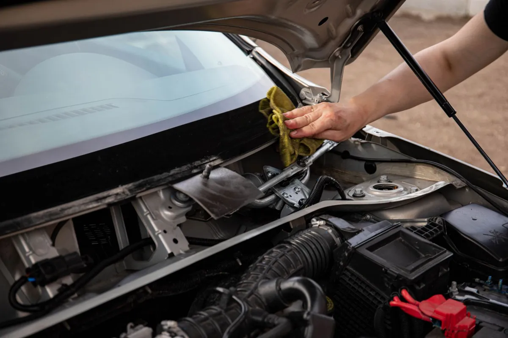

Call, text, or send a message and we’ll get back to you the same day.
Phone: (321) 220-3289
Service Area: Melbourne, West Melbourne, Palm Bay, Indialantic, Melbourne Beach, Satellite Beach, Rockledge, Viera, and the rest of Brevard County. We are a mobile operation, so there is no storefront to visit — we come to your home, office, or roadside location instead.
Business Hours: Monday – Friday, 8:00 AM – 6:00 PM
A technician answers, asks a few quick questions about your vehicle and the damage, and can usually tell you on the spot whether you are looking at a repair or a replacement. If it helps, you can text a photo of the damage before we arrive so the right glass and tools are already loaded on the van.
From there we schedule a time that fits your day, whether that means your driveway this afternoon or your office parking lot tomorrow morning. Most appointments are confirmed within minutes of that first call.

Prefer to write it out? Fill in the form below and we’ll call or email you back the same day.